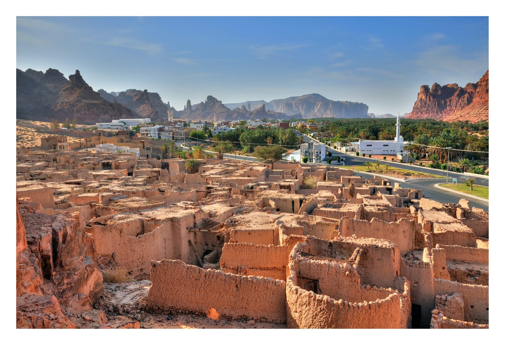

Explore AlUla

Welcome to our AlUla tourism website, your complete guide to exploring one of the most beautiful destinations in Saudi Arabia. This platform is designed to provide visitors with clear, organized, and useful information about AlUla, helping them plan their trips and discover everything the region has to offer.
Our website combines tourism information, cultural insights, and practical guidance in one place. Whether you are planning your first visit or looking to explore more about AlUla, this website makes it easy for you to find what you need quickly and efficiently.
Website Purpose
The main purpose of this website is to simplify the travel experience for visitors by providing accurate and structured information about AlUla. Instead of searching across multiple sources, users can find everything they need in one platform.
The website aims to guide users through different aspects of AlUla, including historical background, famous landmarks, available activities, and cultural experiences.
Website Features
- Clear and simple navigation for easy access to information
- Detailed sections about AlUla’s history and landmarks
- Tour schedule to help visitors plan their trips
- Feedback page to share opinions and experiences
- Well-organized content for a better user experience
What the Website Offers
- Information about AlUla’s history and culture
- Guidance on top places to visit
- Suggested activities and experiences
- Helpful tips for tourists
- Easy access to all sections through navigation
User Experience
The website is designed with simplicity and usability in mind. Users can easily navigate between pages, find relevant information, and explore content without confusion.
The layout is clean and structured, allowing visitors to focus on the information they need while enjoying a smooth browsing experience.
Benefits of the Website
This website saves time and effort for users by gathering all important information in one place. It helps visitors make better travel decisions and enhances their overall experience when planning a trip to AlUla.
It also provides a reliable source of information that users can trust, making it easier to explore AlUla with confidence.
Why Use This Website?
Using this website allows visitors to plan their journey more effectively, discover new places, and gain a deeper understanding of AlUla before visiting. It is a simple and practical tool for anyone interested in tourism and travel.
- Easy trip planning
- Access to useful information
- Better understanding of AlUla
- Improved travel experience
- User-friendly design
This website is your gateway to discovering AlUla in a simple and organized way.
Website Project
Use the navigation menu to explore different sections of the website, including history, schedule, and feedback, to get the most out of your experience.